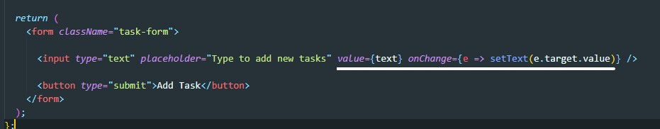
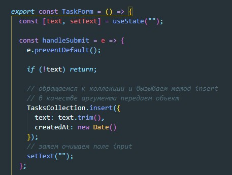

Здесь ничего нового, просто создаем кмопненту которая отрисовывает тег form с собержимым (input и button). Компоненты конечно же создаем в файле imports/ui/TaskForm.jsx
После этого в компоненте App.jsx импортируем нашу компоненту с формой и отрисовываем где необходимо
Возвращаемся в компонент формы и первое что нам надо сделать это сделать наше поле input управляемым
Теперь создадим функцию которая будет вызываться при отправки формы
createdAt - создает атрибут где мы храним даты создания